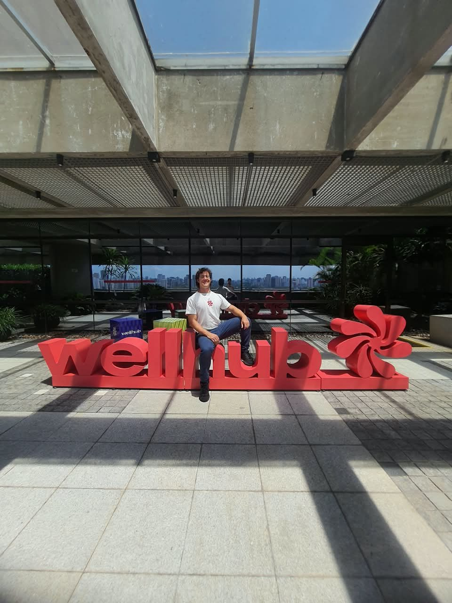
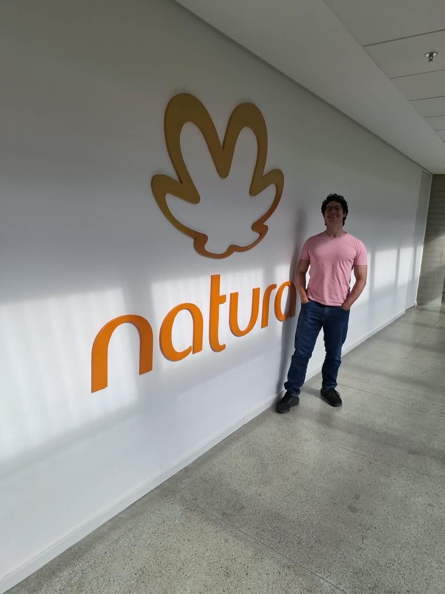
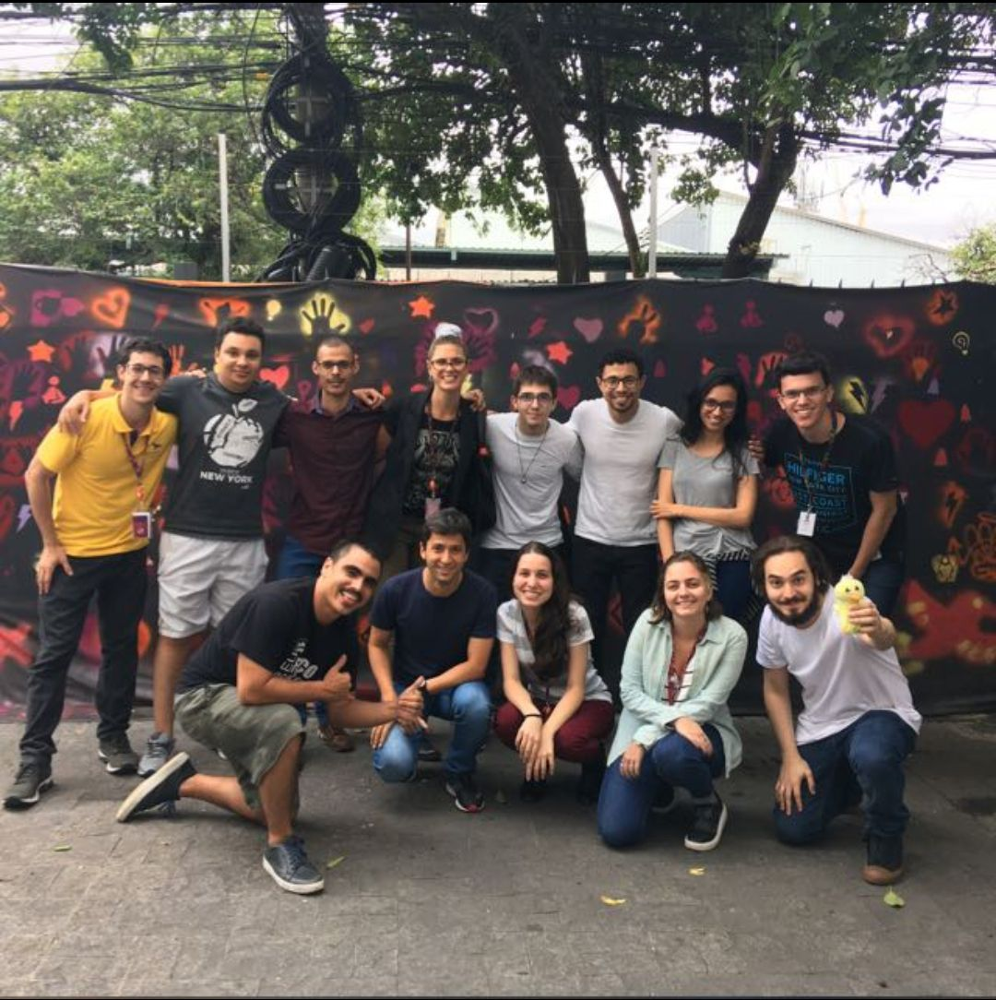
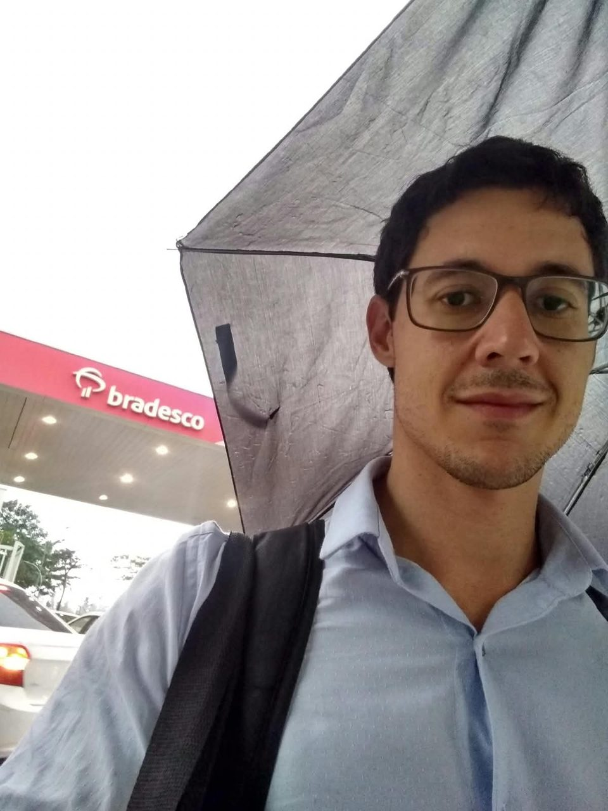
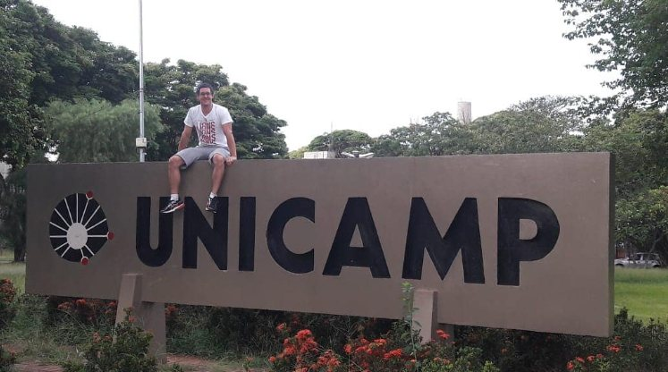
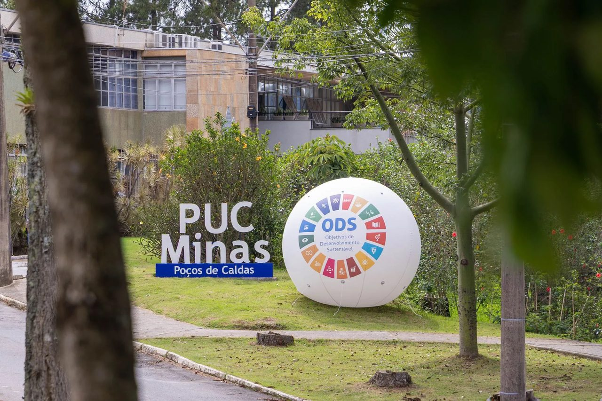
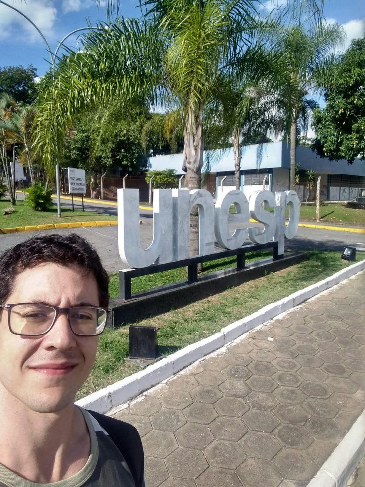

Gabriel Gregório
8+ years turning complex data into measurable business outcomes across fintech, payments, and digital platforms.
About & Bio
I'm a Senior Data Analyst with 8+ years of experience driving product, revenue, risk, and business decisions through analytics across fintech, banking, payments, e-commerce, SaaS, and digital platforms. I hold a BSc in Electrical Engineering and postgraduate degrees in Data Science and Data Mining.
My experience sits at the intersection of technical depth and business strategy, combining hands-on analytics with a strong understanding of how data can influence real business outcomes. I've partnered closely with Product, Risk, Commercial, Operations, Data Science, Engineering, and leadership teams to build solutions ranging from KPI frameworks, customer segmentation, and experimentation to fraud monitoring, anomaly detection, behavioral profiling, and NLP pipelines.
My technical toolkit spans SQL, Python, Power BI, Tableau, Looker, BigQuery, Snowflake, dbt, and Airflow, along with data modeling, A/B testing, analytics automation, and AI/ML applications. I've worked across both high-growth startups and large enterprises, including Natura, Itaú, and Bradesco, turning complex datasets into actionable recommendations and scalable analytical solutions.
More recently, I've been exploring how AI can accelerate the full analytics and product-building workflow, from coding and data analysis to dashboards, automation, and functional applications.
Fraud Intelligence
Anomaly detection, behavioral profiling & pattern recognition across complex transaction ecosystems.
Experimentation
A/B testing, hypothesis testing & decision science driving statistically significant business outcomes.
ML & NLP
Predictive analytics & BERT-based text classification for large-scale data automation.
Data Storytelling
Translating complex patterns into executive-level insights that drive strategic decisions.
Professional Experience

- Reduced manual analysis effort by 70% by building a production-ready NLP pipeline with Hugging Face BERT models and AI-driven text classification, transforming thousands of customer interactions into actionable sentiment and risk insights.
- Increased partner retention by 12% by creating behavioral health metrics enabling Account Managers to identify at-risk partners and intervene earlier.
- Reduced ad hoc analytics requests by 50% by building executive and operational KPI dashboards in Tableau and Metabase, enabling 200+ stakeholders to self-serve performance insights.
- Accelerated strategic decisions impacting over $20M in annual marketplace revenue through experimentation with Product, Operations, and Commercial teams.


- Increased sales by 800% by designing seller segmentation models and continuously optimizing commercial strategies through controlled experimentation.
- Improved seller retention from 30% to 90%+ by executing iterative A/B tests and refining pricing, credit, and engagement strategies.
- Generated an estimated R$15M in incremental revenue by identifying high-growth seller cohorts and designing targeted growth initiatives.
- Reduced decision-making time by 10% by building SQL-based data models that became the organization's single source of truth.


- Increased financing conversion rates by 15% by designing and analyzing A/B tests for pricing and lending strategies.
- Delivered executive data storytelling connecting experiment outcomes to revenue impact.
- Supported decisions impacting more than R$100M in loan volume by translating experiment results into executive recommendations.

- Reduced fraud losses by an estimated 0.7% by developing anomaly detection workflows and fraud pattern identification models.
- Conducted fraud investigations using SQL and Python, performing deep exploratory analysis to validate suspicious activities and identify behavioral signatures.
- Developed risk assessment frameworks used to prioritize fraud mitigation actions based on severity, impact, and affected populations.
- Produced executive fraud reports summarizing findings, trends, and recommended corrective actions.


- Improved collection campaign performance by 12% by conducting A/B tests on digital recovery strategies.
- Supported credit recovery analytics through data exploration and reporting.

Tools & Expertise
Data & Technical Stack
Fraud Analytics & Risk
Experimentation & Science
Business Impact & Strategy
Education & Credentials






What People Say
Gabriel demonstrated remarkable technical skills such as Python, SQL, SAS, AWS and Tableau. His outstanding soft skills include active participation in meetings, an outgoing personality, and contributing positively to the work environment. His creativity and ability to identify opportunities enhance project innovation. I highly recommend Gabriel as a proactive, talented, and excellent team player!

Working with Gabriel is an amazing experience. He is an incredibly competent and highly collaborative professional who constantly seeks to expand his knowledge and perform his tasks with excellence. In addition to this, he spreads his charisma and positive energy, infecting those around him!

Collaborating with Gabriel guarantees you the company of a creative and lighthearted personality, who constantly seeks to expand their knowledge. You can always count on him to provide innovative solutions, nothing less!

Gabriel Gregório is an exceptional professional who is highly competent and always willing to assist and share his knowledge with his colleagues at work. He has a great sense of humor, remains engaged in tasks, and possesses extensive expertise in data management, specifically with regards to MySQL!

Gabriel is an excellent professional, dedicated and highly skilled in building relationships with people. With great empathy and technical knowledge, he excels in any activity he sets out to do. I have followed his trajectory since his first year of college. I quickly identified his great potential, fearlessly embracing changes, competent, and ready to learn everything proposed to him. He spares no effort!

I had the opportunity to meet Gabriel as a data manager at Wellhub. He has strong technical knowledge in data, SQL, and analytics, with an excellent ability to cross-reference complex information and transform it into actionable insights. Gabriel also stands out for his autonomy, sense of ownership, and ease of working across different areas and levels of the organization. He is a professional who truly adds value, and I highly recommend him.

Let's build something meaningful together
Whether you need a Senior Data Analyst to drive experimentation frameworks, or deliver insights that move the needle, I'd love to connect.